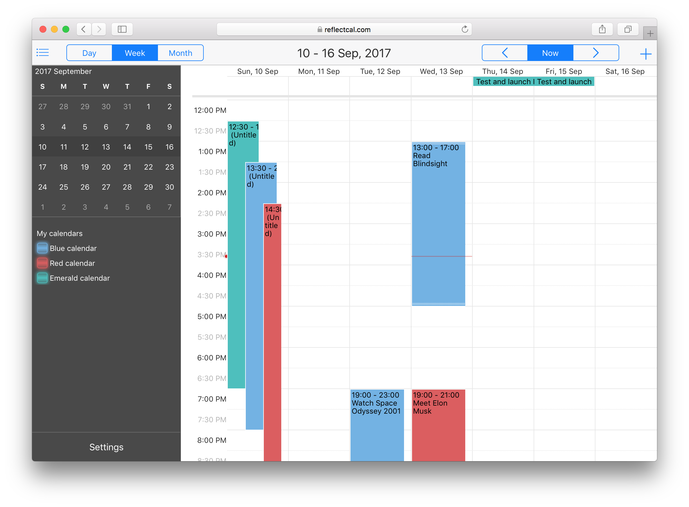

I will speak of
- My background as a developer
- Challenges and how they were overcome
-
My interests and aspirations
My background
I started my career in 2007
The main driver was my reading about AJAX. I was amazed by how you can change the parts of the web page without full reload.
My first production project was web-calendar application.
The goal was to build something akin Google Calendar.
Curiously, the maturest open source project of mine is the web-calendar

Then, after period of additional studying in university, I joined EPAM at 2011.
At EPAM, I changed several projects.
Without specific naming, let's enumerate them by stacks
- Pure front-end - NWA widgets
- Fullstack for German telecom - JS/Java/Scala
- Front-end with both web and native widgets for TV set-top boxes
-
React native mobile app (my current project)
Widgets for Netvibes.com
You write it once and then it can be exported to:
- Netbives,
- iGoogle (remember that Google homepage? 😁),
- Google Desktop widgets
- Mac OS X platform widgets.
-
Mobile web app
As you can see, the main difficulties came from large set of supported platforms
On to the JVM world...
My next project was mature and established set of J2EE applications for German telecom company
Main customers of this app were the employees of the company
The stack
The stack was mainly:
- Java 1.5
- Oracle
- Web pages were server rendered with JSP
-
JBOSS and Weblogic as an application servers
But it was more interesting than that...
Not long before my arrival to the project there were attempts to introduce some
newer elements into that stack
Further, after I joined the project, I introduced some other changes
What we ended up with was:
- Scala with Lift/Play frameworks (either front-end or REST endpoints)
- Sometimes newer Java (up to 1.8)
- MongoDB for some prototypes for non-relational storage
- SPA model for some apps (some were better left as a server rendered pages)
-
Oracle (that was the idea - to preserve data platform)
Radical shift to different UI paradigm
On EPAM's Javascript Open Day
, I've heard about project where UI for TV set top boxes are built with web technologies.
So, naturally I wanted to join
Actually, while I was on project, the stack changed
Initial one was
- QTWebkit without any browser chrome
- React-based SPA loaded into browser window
- Middleware JS layer to translate data model into requests and event updates
- Linux
-
Native modules
But after a few months, the stack was quite radically changed
It became
- UI is composed of EFL widgets with JS bindings
- Weston is used as display server and composite window manager
- Node.js runs JS in which business logic and UI control are written
- Services are run with systemd
-
...on top of Yocto project Linux distribution
After more than 1.5 years, I switched projects again
New one employs more traditional React Native based stack. We develop the mobile application
for both iOS and Android.
Some challenges
- Task scheduler for notifications
- Introduction of feature flags into platform
-
CS advancement
Task scheduler for notifications
The task is quite abstract and may appear in many forms
The goal was to allow only one notification to be displayed at a time. It may be displayed for arbitrary period of time. New notifications should be put in FIFO order. Each notification also has a priority that should be respected.
How it was implemented
What was used is scheduler that has following elements:
- Slot for currently displayed notification
- Priority queue of incoming tasks
- Task as a chained sequence of intervals, each one can be aborted
Priority queue was implemented as a map of lists. We didn't need heap-based PQ because
number of priorities were about 10 and number of entities (all stacked notifications) rarely approached 10-15 in real production.
Introduce feature flags platform
The idea was to introduce flags that enable/disable features currently being in development. So we
could ship code for the feature, but left it inactivated for production until fully complete. Meanwhile, testers and other devs can manually flip the flag and preview the feature.
Specifics for trunk-based model
As we used Gerrit for code-review, all changes were delivered as single commits. Therefore, to split large change into several smaller ones required us to keep everything working until final patch lands. In this regard, feature flags helped.
CS advancement
The goal was to complete these 2 courses on CS from Coursera:
My interests and aspirations
Here I will tell about my interests, goals and skills
- Open source projects
- Languages and technologies
-
Where I want to grow
My pet projects including open source ones
There's a short list
I have experience in these languages (more or less sorted by level of knowledge in descending order)
- JavaScript
- Java
- Python
- Scala
-
Some other languages that I've touched very lightly - Ruby, Clojure
What are my goals and interests for the nearest future
- To increase my knowledge of CS (through practise in HackerRank as one of the ways)
- To look into concepts of distributed systems, like CRDT and partially sorted logs
- To look into native app development (Swift)
- To get backend experience in containers, services composability, blue-green deployment
In terms of EPAM I want to grow to Chief Software Engineer